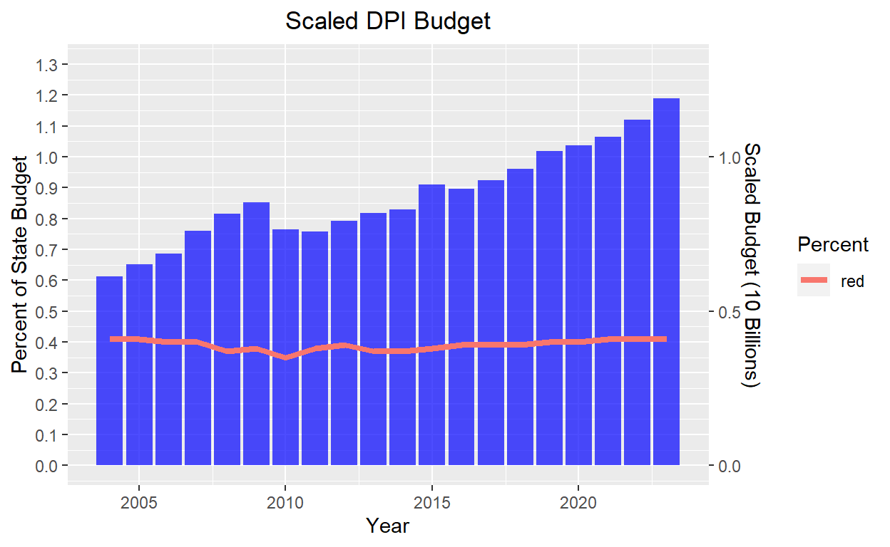
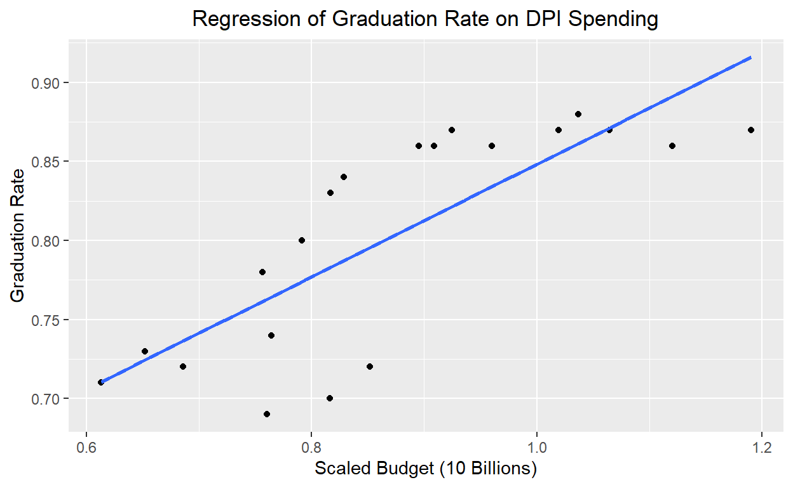
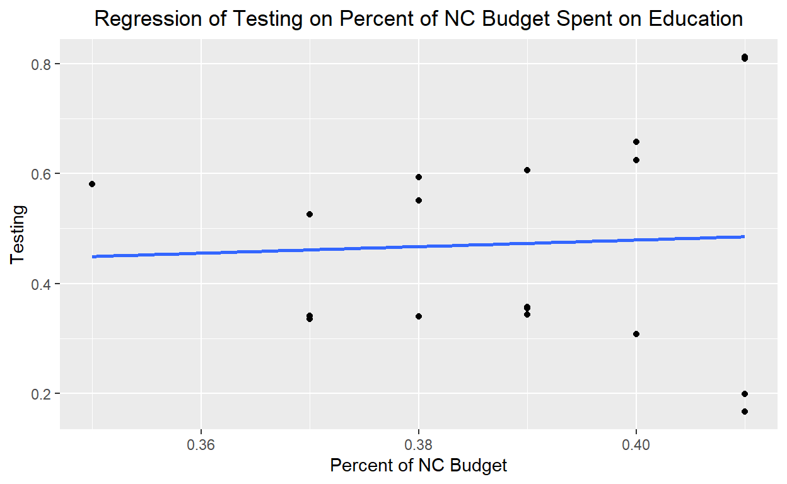

Exploring the impact of funding on student achievement in North Carolina K-12 Schools
Does more funding for public education increase student achievement?
In this study I hope to explore the impact of NC K-12 public school funding on student achievement. For decades, public school funding across the country has been stagnant or decreasing. In North Carolina specifically, millions of dollars of private vouchers are granted to students who attend private schools, which is subsequently paid for by removing the equivalent per pupil spending from the student’s designated public school.
I hypothesize that as more money is dedicated to the NC Department of Public Instruction for use in K-12 schools and paying faculty salaries, student achievement will increase. If student achievement grows with higher percentages of funding, my hypothesis will be true. If student achievement grows or is stagnant regardless of an increase in the percentage of funding, then my hypothesis will be false. When I run the regression of student achievement on the budget, a positive coefficient would prove support for the hypothesis.
This is a cross-sectional study of budget and student achievement. Student achievement is the dependent variable and is measured in two ways. The first method of measuring student achievement is through analyzing the graduation rate of high school students in North Carolina. The second method of measuring student achievement is through analyzing the percentage of students in grades 3-8 who met the proficiency standards for reading and mathematics as defined by the NC Department of Public Instruction. These two methods of measuring student achievement will independently be compared to the percent of the overall NC state budget that was set aside for public education, which is the explanatory variable. The reason for comparing achievement to the percent of the state budget designated for K-12 education rather than the actual budget itself is because overtime states will always increase the budget of public K-12 education as their populations grow and more students are expected to enroll. The percent set aside for K-12 schools, however, changes each year as state legislatures decide how much of a priority funding public education is.
From the 2003-2004 school year to the 2022-2023 school year, data was collected from the NC Department of Public Instruction, the NC Board of Education, and the National Center for Education Statistics. There were dozens of archived documents that were interpreted and compiled into one data set by hand. Below are the variables and their explanations:
dpi_budget = The total budget in whole dollars set aside for the Department of Public Instruction
percent = Percent of the NC state budget set aside for the Depart of Public Instruction
students = The whole number of students expected to be enrolled in K-12 schools during the school year
reg_school = The whole number of public schools operated by the state or an approved Local Education Agency
char_school = The whole number of charter schools recognized by the state and receiving funding
perPupil = The amount of funding (dpi_budget) per student
teachers = The whole number of teaching positions authorized by the state
avg_salary = The average compensation of all teachers within the state
start_salary = The minimum salary a teacher in their first year can expect to earn
grad_rate = The percent of students who graduated high school in the given year
testing = The percent of students in grades 3-8 who achieved proficiency in both reading and mathematics
To better understand the background associated with this study, take a look at the following visualization. This graph shows the whole dollar amount of the budget appropriated for public K-12 education in North Carolina. The data shows a consistent increase in the budget, which is due to enrollments increasing year after year. The red line, however, demonstrates that the actual percent of the state budget allocated for public K-12 education does not always increase. By looking at the percent of the state budget allocated to education, we can compare funding across the two decades of data in an unbiased manner.
## Load Libraries
library(ggplot2)
library(dplyr)
nc_education <- read.csv("data/nc_education.csv")
## Modify dpi_budget to fit within the graph
coeff <- 1e10
dpi_budget_limit <- (nc_education$dpi_budget)/coeff
## Bar Plot w/ Percent line overlay
visual2 <- ggplot(nc_education, aes(x = year)) +
geom_bar(aes(y = dpi_budget_limit), stat = "identity", fill = "blue", alpha = 0.7) +
geom_line(aes(y = percent, group = 1, color = "red"), size = 1.5) +
labs(title = "Scaled DPI Budget",
x = "Year",
y = "Scaled DPI Budget",
color = "Percent") +
theme(plot.title = element_text(hjust = 0.5)) +
scale_y_continuous(
name = "Percent of State Budget",
sec.axis = sec_axis(~., name = "Scaled Budget (10 Billions)"),
breaks = seq(0, 1.3, by = 0.1),
limits = c(0, 1.3)
)
visual2
The following scatter plots demonstrate two regressions, one comparing student achievement in the form of testing results to the DPI budget and the second comparing high school graduation rates to the DPI budget.
The first regression between testing and DPI spending shows a negative regression, meaning that as the budget increased, the percent of students who earned proficient scores decreased. At the surface, this would disprove my earlier hypothesis that as funding increases so does student achievement, however, there is underlying context provided with the data. According to the State of North Carolina, the percent of students who earned proficient scores dramatically decreases each time the testing is made more rigorous. Therefore, the negative regression is not necessarily a result of increased funding, but rather stricter curriculum requirements. This is why acknowledging confounding variables and additional variables is necessary to ensure quality analysis.
In the second regression, there is a positive regression that proves my hypothesis to be true. As funding increases, so did the graduation rate of high school students. Similar to the first regression, additional context can help provide an explanation of the data. While it is true that additional spending likely helped provide additional resources for students, legislation like “No Child Left Behind” could also have helped to increase graduation rates regardless of the budget.
Together, these two regressions counteract one another and further analysis is necessary. I will continue to do so by looking at average teacher compensation and the percent of the state budget dedicated to education, comparing all of these to the two types of student achievement.
## Budget Regression
budget_linear1 <- lm(testing ~ dpi_budget_limit, data = nc_education)
budget_linear1
Call:
lm(formula = testing ~ dpi_budget_limit, data = nc_education)
Coefficients:
(Intercept) dpi_budget_limit
1.560 -1.285 ## Budget Plot
budget_regression_plot <- ggplot(nc_education, aes(x = dpi_budget_limit, y = testing)) +
geom_point() +
geom_smooth(method = "lm", se = FALSE) +
labs(title = "Regression of Testing on DPI Spending",
x = "Scaled Budget (10 Billions)",
y = "Testing") +
theme(plot.title = element_text(hjust = 0.5))
budget_regression_plot## Graduation Regression
graduation_linear1 <- lm(grad_rate ~ dpi_budget_limit, data = nc_education)
graduation_linear1
Call:
lm(formula = grad_rate ~ dpi_budget_limit, data = nc_education)
Coefficients:
(Intercept) dpi_budget_limit
0.4921 0.3563 ## Graduation Plot
graduation_regression_plot <- ggplot(nc_education, aes(x = dpi_budget_limit, y = grad_rate)) +
geom_point() +
geom_smooth(method = "lm", se = FALSE) +
labs(title = "Regression of Graduation Rate on DPI Spending",
x = "Scaled Budget (10 Billions)",
y = "Graduation Rate") +
theme(plot.title = element_text(hjust = 0.5))
graduation_regression_plot
This second analysis further demonstrates how the above results are inconclusive. The first graph shows how the average teacher’s salary increases as the budget increases, with a regression between the average teacher’s salary following that. This regression shows that as a teacher’s salary increases, the results of testing actually decreases. This is consistent with the previous result of testing performance decreasing as the overall DPI budget increases. From the previous regression above, one might believe that overall budget does not increase testing performance, but maybe as teachers are paid more, their students will perform better. This regression shows that is not the case.
Moving on, perhaps as the percent of the NC state budget allocated to funding increases, so does testing performance. Recall the previous graph in the Data section that showed the percent of state funding dedicated to education - it is relatively stable, but there are still increases and decreases. Performing a regression between testing and the percent of the state budget dedicated to education, there is a small positive relationship. For every percent of the state’s budget that is dedicated to education, the testing performance of students increase 0.6 points. In the previous analysis, testing performance decreased with an increased overall budget while graduation rates increased. Now, looking at the percent spent on education, testing performance increases. As discussed earlier, looking at the percent of the budget spent on education is a more reliable way of comparing the budget to student achievement. By looking at the percent, the results can be interpreted more casually.
## Demonstrate increase in teacher salary with increased budget
salary_plot <- ggplot(nc_education, aes(x = dpi_budget_limit, y = avg_salary)) +
geom_point(color = "black", alpha = 0.7) +
geom_smooth(method = lm, se = FALSE, aes(y = avg_salary, group = 1), size = 1.5) +
labs(title = "Average Teacher Salary vs. Scaled Budget",
x = "Scaled DPI Budget",
y = "Average Teacher Salary")
salary_plot## Salary and Achievement Regression
salaryachievement_linear1 <- lm(testing ~ avg_salary, data = nc_education)
salaryachievement_linear1
Call:
lm(formula = testing ~ avg_salary, data = nc_education)
Coefficients:
(Intercept) avg_salary
2.414e+00 -4.044e-05 ## Salary and Achievement Plot
salaryachievement_regression_plot <- ggplot(nc_education, aes(x = avg_salary, y = testing)) +
geom_point() +
geom_smooth(method = "lm", se = FALSE) +
labs(title = "Regression of Testing on Teacher Salary",
x = "Average Teacher Salary",
y = "Testing") +
theme(plot.title = element_text(hjust = 0.5))
salaryachievement_regression_plot## Percent Regression
percent_linear1 <- lm(testing ~ percent, data = nc_education)
percent_linear1
Call:
lm(formula = testing ~ percent, data = nc_education)
Coefficients:
(Intercept) percent
0.2404 0.5971 ## Percent Plot
percent_regression_plot <- ggplot(nc_education, aes(x = percent, y = testing)) +
geom_point() +
geom_smooth(method = "lm", se = FALSE) +
labs(title = "Regression of Testing on Percent of NC Budget Spent on Education",
x = "Percent of NC Budget",
y = "Testing") +
theme(plot.title = element_text(hjust = 0.5))
percent_regression_plot
From this study it was determined that the two measures of students achievement conflicted in terms of positive influence from an increased state budget. As the overall DPI budget increased, testing performance decreased and graduation rates increased. To determine if this was true, more regressions were performed to determine if there was a positive influence of the budget on both factors of student achievement. Increased teaching salaries also had a negative impact on testing performance, but up to this point, these three tests should not be interpreted casually because of an excess of confounding variables like test formats changing and graduation requirements decreasing. The final regression can be interpreted more casually, as the percent of the state budget spent on education added 0.6 points to testing performance for each percent increased. It was discussed that because the percent spent on education was the independent variable, and this is constant over time, the results were more reliable. As a result, the hypothesis that increased funding increases student achievement holds true.
There are several limitations to this study. Because measures of student achievement have changed dramatically over the two decades the data was collected, it is extremely difficult to generalize over time. Furthermore, given additional time and resources, analyzing student achievement across individual characteristics like gender, race, and location, might provide more insight as to how effective additional funding truly is. While the hypothesis generally holds true, more analysis is necessary to confirm the results of this study.